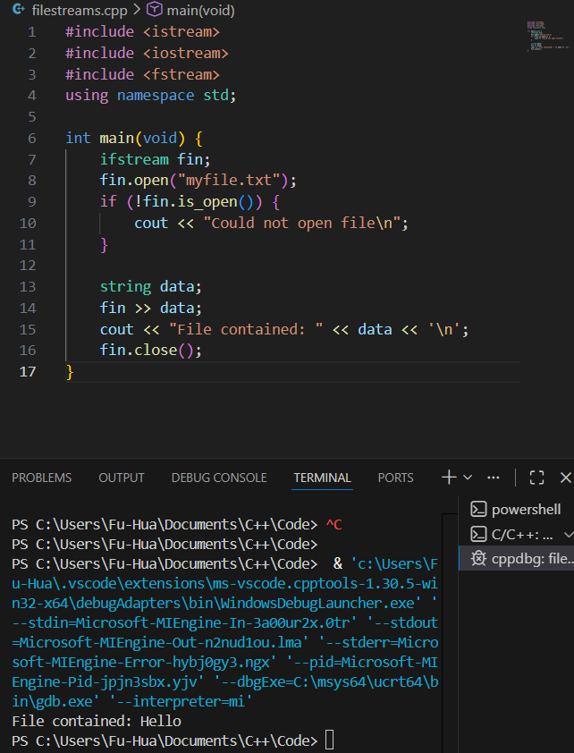
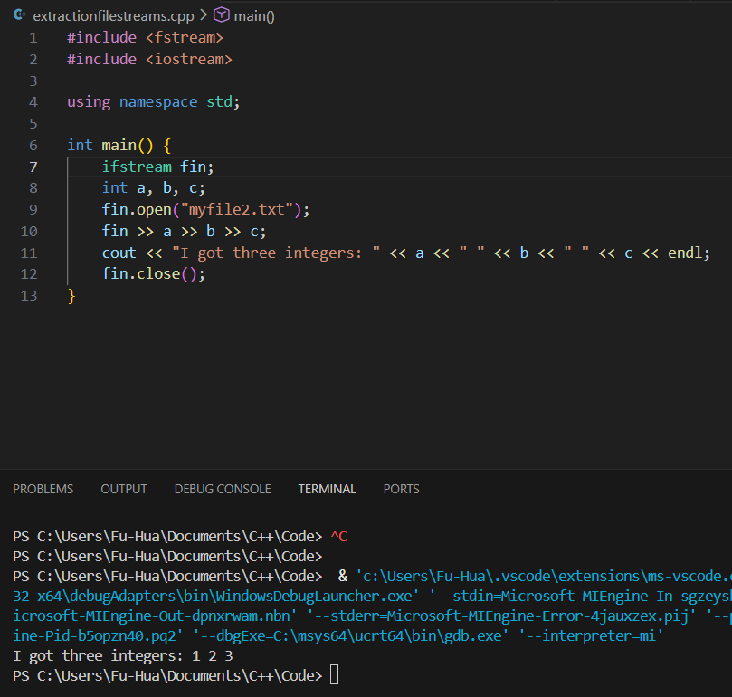
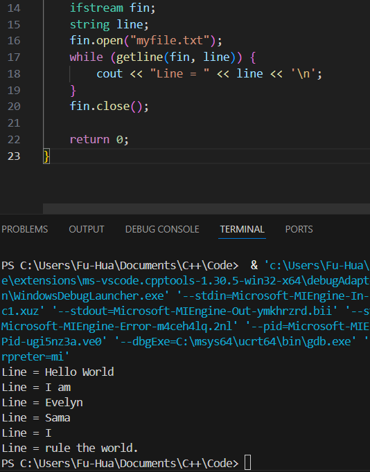

File Streams
Topics
- What is a file stream?
- Steps
- Header <fstream>
- Input files (iftstream)
- opening
- fail checking
- extracting
- line-oriented input
- Output files (ofstream)
- opening
- fail checking
- insertion
- formatted insertion (iomanip)
File Streams
- We can read and write from files very similarly to reading and writing to and from the console
- This task is called working with file streams
Files
- Files are data stored in "secondary storage"
- Primary storage:
- Random Access Memory (RAM)
- Random isn't chaotic in this context, it means direct
- Secondary storage:
- Hard drive
- USB drive
- External hard drive
- Volatile --> refers informally to whether or not stuff goes away when you unplug device
- RAM is volatile.
- Better work with primary storage than secondary storage
Steps to Use File Streams
Working with files in C++ requires the following steps:
- Include the <fstream> header file
- Declare a file variable (ifstream for reading input or ofstream for reading output) and name the variable (i.e. fin or fout)
- Open the file connecting the variable to the actual file and check for failure
- Do the work intended on the file (read or write) using << or >>
- Close the file
Header
- File Streams
- #include <fstream> (ifstream) --> data from DISK to RAM
- Output File Stream (ofstream) --> data from RAM to DISK
.open()
Used to open BOTH input files for reading and to open output files for writing
- Links a stream object with a file on your file system
- Places a file reading marker at the beginning of the file, pointing to the first character in it.
- If the input file doesn't exist, it won't be opened
- If you don't have permission to open the input file, it won't be opened
- If the output file does not exist, a new file with that name is created
- If the output file already exists, it is erased (but there are ways to open files for appending content rather than overwriting)
Example

.fail()
- Returns false if the file was able to be opened
- Returns true if it couldn't open the file
- Doesn't exist
- Don't have permission
is_open()
- Returns true if the file is currently opened and linked to the file stream
- Returns false if it couldn't open the file
- Doesn't exist or doesn't have permission
.close()
- de-links the file from the stream
- ALWAYS close the file when you're done with it.
- Every .open() should have a matching .close()
- Closing a file you were writing to is equivalent to saving a file.
Extraction Operator >>
- ifstream uses the extraction operator exactly like cin

Line Oriented Input
- fin >> will skip preceding whitespace and extract until the next whitespace.
- Instead, you can grab one line at a time with getline()
- getline(fin, line)
- getline returns:
- true - if it was able to get a line and put it into line
- false - if it was not
- getline will grab a line and put it into a string line

Output File Streams
ofstream acts just like cout except it writes to a file, not the console.
- Can even add formatting manipulators we encountered earlier (from iomanip)